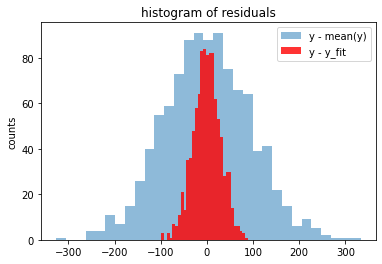
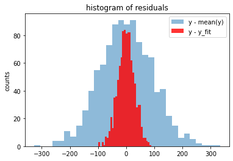

Least Absolute Deviation (LAD) Regression
Contents
Least Absolute Deviation (LAD) Regression#
Linear regression is a supervised machine learning technique that produces a linear model predicting values of a dependent variable from known values of one or more independent variables. Linear regression has a long history dating back to at least the 19th century and is a mainstay of modern data analysis.
This notebook demonstrates a technique for linear regression based on linear programming to minimize a sum of absolute errors between the model prediction and data from a training set. The sum of absolute values of errors is the \(L_1\) norm which is known to have favorable robustness characteristics in practical use. We follow closely this paper.
# Install Pyomo and solvers for Google Colab
import sys
if "google.colab" in sys.modules:
!wget -N -q https://raw.githubusercontent.com/jckantor/MO-book/main/code/install_on_colab.py
%run install_on_colab.py
Generate data#
The Python scikit learn library for machine learning provides a full-featured collection of tools for regression. The following cell uses make_regression from scikit learn to generate a synthetic data set for use in subsequent cells. The data consists of a numpy array y containing n_samples of one dependent variable \(y\), and an array X containing n_samples observations of n_features independent explanatory variables.
from sklearn.datasets import make_regression
import numpy as np
n_features = 1
n_samples = 1000
noise = 30
# generate regression dataset
np.random.seed(2020)
X, y = make_regression(n_samples=n_samples, n_features=n_features, noise=noise)
Data Visualization#
Before going further, it is generally useful to prepare an initial visualization of the data. The following cell presents a scatter plot of \(y\) versus \(x\) for the special case of one explanatory variable, and a histogram of the difference between \(y\) and the mean value \(\bar{y}\). This histogram will provide a reference against which to compare the residual error in \(y\) after regression.
import matplotlib.pyplot as plt
if n_features == 1:
plt.scatter(X, y, alpha=0.3)
plt.xlabel("X")
plt.ylabel("y")
plt.grid(True)
plt.figure()
plt.hist(y - np.mean(y), bins=int(np.sqrt(len(y))))
plt.title('histogram y - mean(y)')
plt.ylabel('counts')
Text(0, 0.5, 'counts')
Model#
Suppose we have a finite dataset consisting of \(n\) points \(\{({X}^{(i)}, y^{(i)})\}_{i=1,\dots,n}\) with \({X}^{(i)} \in \mathbb{R}^k\) and \(y^{(i)} \in \mathbb{R}\). A linear regression model assumes the relationship between the vector of \(k\) regressors \({X}\) and the dependent variable \(y\) is linear. This relationship is modeled through an error or deviation term \(e_i\), which quantifies how much each of the data points diverge from the model prediction and is defined as follows:
for some real numbers \(m_1,\dots,m_k\) and \(b\).
The Least Absolute Deviation (LAD) is a possible statistical optimality criterion for such a linear regression. Similar to the well-known least-squares technique, it attempts to find a vector of linear coefficients \({m}=(m_1,\dots,m_k)\) and intercept \(b\) so that the model closely approximates the given set of data. The method minimizes the sum of absolute errors, that is \(\sum_{i=1}^n \left |e_i \right|\).
The LAD regression is formulated as an optimization problem with the intercept \(b\), the coefficients \(m_i\)’s, and the errors \(e_i\)’s as decision variables, namely
In general, the appearance of an absolute value term indicates the problem is nonlinear and, worse, that the objective function is not differentiable when any \(e_i = 0\). However, for this case where the objective is to minimize a sum of absolute errors, one can reformulate the decision variables to transform this into a linear problem. More specifically, introducing for every term \(e_i\) two new variables \(e_i^-, e_i^+ \geq 0\), we can rewrite the model as
The following cell provides a direct implementation of LAD regression.
import pyomo.environ as pyo
def lad_regression(X, y):
m = pyo.ConcreteModel('LAD Regression')
n, k = X.shape
# note use of Python style zero based indexing
m.I = pyo.RangeSet(0, n-1)
m.J = pyo.RangeSet(0, k-1)
m.ep = pyo.Var(m.I, domain=pyo.NonNegativeReals)
m.em = pyo.Var(m.I, domain=pyo.NonNegativeReals)
m.m = pyo.Var(m.J)
m.b = pyo.Var()
@m.Constraint(m.I)
def residuals(m, i):
return m.ep[i] - m.em[i] == y[i] - sum(X[i][j]*m.m[j] for j in m.J) - m.b
@m.Objective(sense=pyo.minimize)
def sum_of_abs_errors(m):
return sum(m.ep[i] + m.em[i] for i in m.I)
pyo.SolverFactory('glpk').solve(m)
return m
m = lad_regression(X, y)
m.m.display()
m.b.display()
m : Size=1, Index=J
Key : Lower : Value : Upper : Fixed : Stale : Domain
0 : None : 90.4819738904496 : None : False : False : Reals
b : Size=1, Index=None
Key : Lower : Value : Upper : Fixed : Stale : Domain
None : None : -0.187847121914792 : None : False : False : Reals
Visualizing the Results#
y_fit = np.array([sum(x[j]*m.m[j]() for j in m.J) + m.b() for x in X])
if n_features == 1:
plt.scatter(X, y, alpha=0.3, label="data")
plt.plot(X, y_fit, 'r', label="y_fit")
plt.xlabel("X")
plt.ylabel("y")
plt.grid(True)
plt.legend()
plt.figure()
plt.hist(y - np.mean(y), bins=int(np.sqrt(len(y))), alpha=0.5, label="y - mean(y)")
plt.hist(y - y_fit, bins=int(np.sqrt(len(y))), color='r', alpha=0.8, label="y - y_fit")
plt.title('histogram of residuals')
plt.ylabel('counts')
plt.legend()
<matplotlib.legend.Legend at 0x7fe2df950af0>
 
